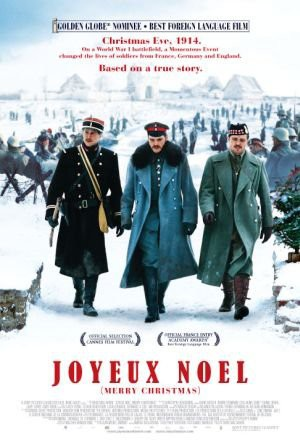

#2523 Merry Christmas
Alternativ: Joyeux Noel (Englischer Titel)
Auszeichnungen: für 1 Oscars nominiert
 
 IMDB-Wertung: 7.8 / 10
IMDB-Wertung: 7.8 / 10  Metascore: 70
Metascore: 70 
Kriegsdrama aus dem Jahr 2004, das Verbrüderungen zwischen verfeindeten Soldaten im ersten Weltkrieg thematisiert. An Weihnachten 1914 gibt es an der Front einen kurzfristigen Waffenstillstand zwischen den deutschen und alliierten Truppen. Die erschöpften Soldaten nähern sich an und singen gemeinsam. Mitten drin: die Sopranistin Anna Sörensen und ihre Freund Nikolaus Sprink.
Jahr: 2005
Dauer: 116 Minuten
FSK: 12
Land: Frankreich Studio: Constantin Film Development Inc.Tonspuren:
Untertitel: Deutsch,
Auflösung: 1080p (1920x816) Größe: 4843 MB
Genre: Drama, Musik, Krieg, Liebe, Geschichte, Weihnachten
Regisseur: Christian Carion
Drehbuch: Christian Carion
Soundtrack: Philippe Rombi
Darsteller:
 Diane Kruger als Anna Sörensen
Diane Kruger als Anna Sörensen Benno Fürmann als Nikolaus Sprink
Benno Fürmann als Nikolaus Sprink Guillaume Canet als Le lieutenant Audebert
Guillaume Canet als Le lieutenant Audebert Gary Lewis als le pasteur Palmer
Gary Lewis als le pasteur Palmer Dany Boon als Ponchel
Dany Boon als Ponchel Daniel Brühl als le lieutenant Horstmayer
Daniel Brühl als le lieutenant Horstmayer- Lucas Belvaux als Gueusselin
 Steven Robertson als Jonathan
Steven Robertson als Jonathan- Frank Witter als Jörg - un soldat allemand
 Ian Richardson als L'évêque anglais
Ian Richardson als L'évêque anglais- Robin Laing als William
 Michel Serrault als Le châtelain
Michel Serrault als Le châtelain- Suzanne Flon als La châtelaine
 Christopher Fulford als Le major écossais
Christopher Fulford als Le major écossais- Jordan McCurrach als Un soldat écossais
 Gilbert von Sohlern als L'officier allemand d'accueil
Gilbert von Sohlern als L'officier allemand d'accueil- Natalie Dessay als Anna Sörensen , singing voice
- Rolando Villazón als Nikolaus Sprink , singing voice
- Alex Ferns als Le lieutenant Gordon
- Bernard Le Coq als Le général Audebert
- Thomas Schmauser als Le Kronprinz
- Joachim Bißmeier als Zimmermann
- Calum Beaton als Un joueur de cornemuse écossais
- Otto Beckmann als Otto - un soldat allemand
- Philippe Beautier als Morallec
- Steffen Bielig als Markus
- Nicholas Biggam als Un enfant anglais
- David Bruce als Un joueur de cornemuse écossais
- Christian Carion als Un infirmier
- France Corbet als Madeleine
- Mickey Dedaj als Le couturier
- Steven Duffy als Un brancardier
- Tom Duncan als Un soldat écossais
- Roy Entwistle als Un soldat écossais
- Markus Friedmann als Un officer allemand dans la salle d'état major
 Michael A. Grimm als Michael - un soldat allemand
Michael A. Grimm als Michael - un soldat allemand- Jannis Hensel als Une enfant allemande
- Mathias Herrmann als L'officer allemand au quartier général
- Jan Hutter als Herbert - un soldat allemand
- Joe Johnson als Un soldat écossais
- Fraser Johnston als Un soldat écossais
- Gary Lamont als Un soldat écossais
- Griogair Lawrie als Un joueur de cornemuse
- Gerrard Lynch als Un soldat écossais
- Ivan MacDonald als Un joueur de cornemuse écossais
- Neil McNulty als Un soldat écossais
- Tony Matthews als Le général britannique
- Florian Mescam als Un enfant français
- Emun Mohammadi als Un soldat écossais
- David Mullen als Un soldat écossais
Datei: X:\2005(G-M)\Merry Christmas (2005, FSK12, 1920x816).mkv seit 17.11.2015
Festplatte: HD 2005(G-Z)-2006(A-Z)
 Es gibt insgesamt 46 Filme in der Gruppe '2005(G-M)'
Es gibt insgesamt 46 Filme in der Gruppe '2005(G-M)'